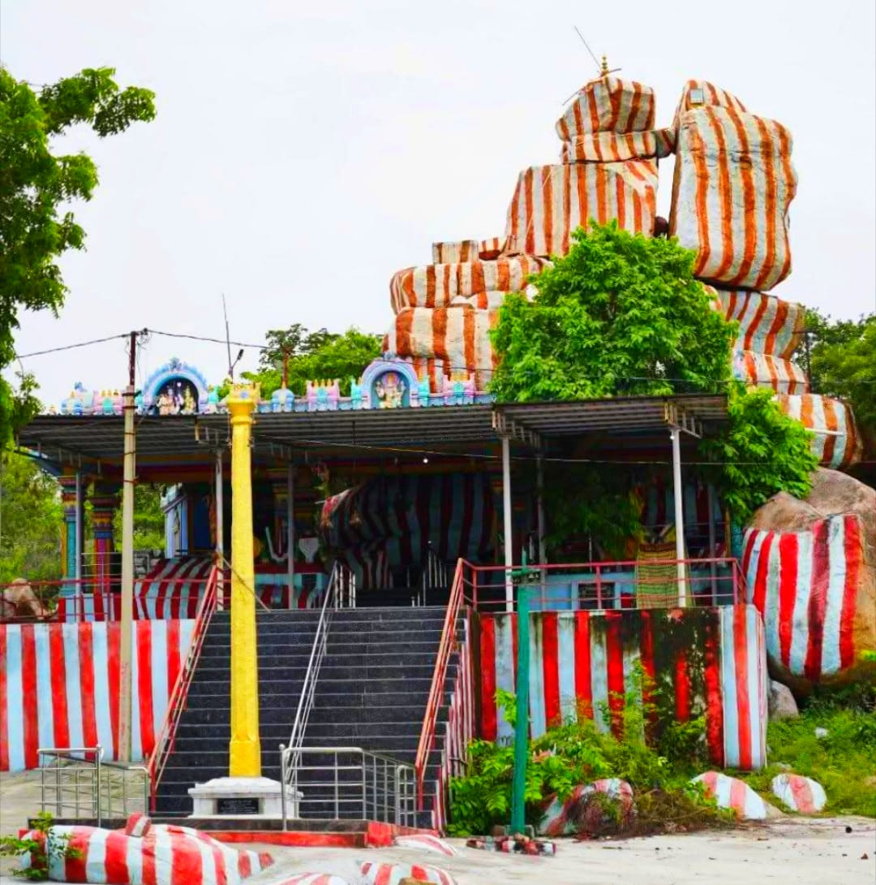
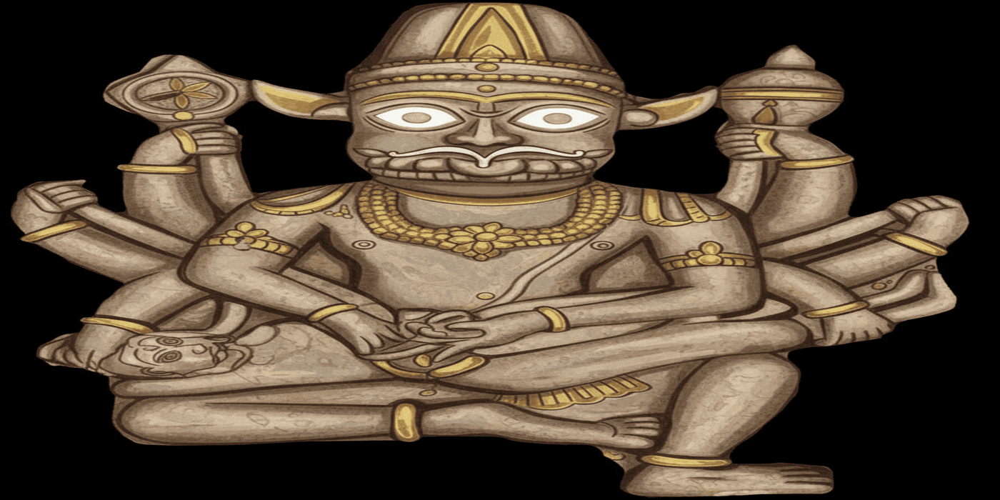
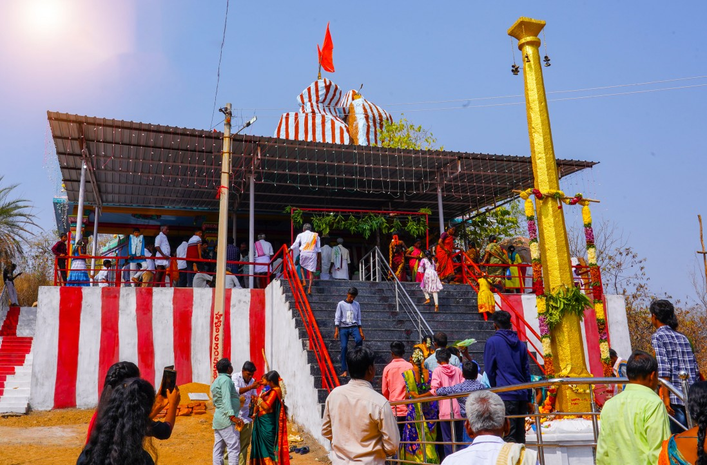
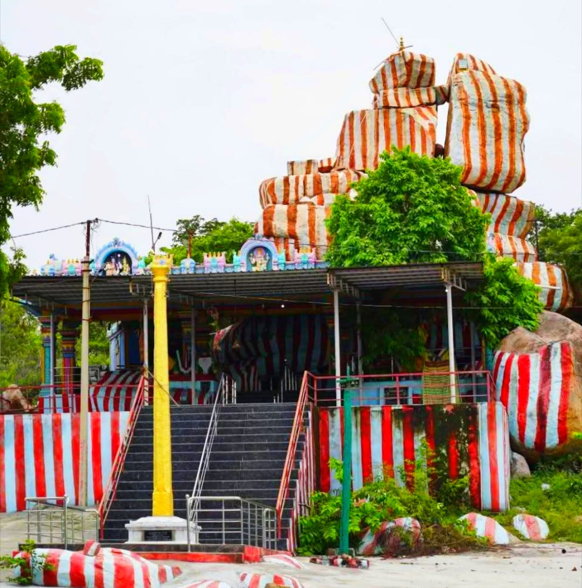
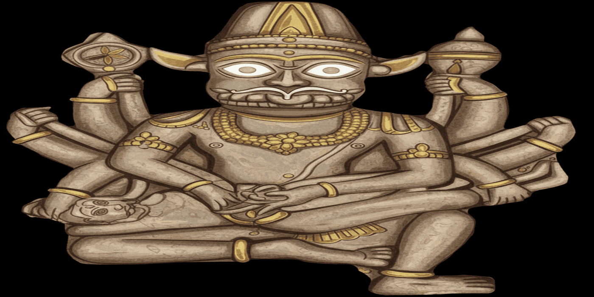
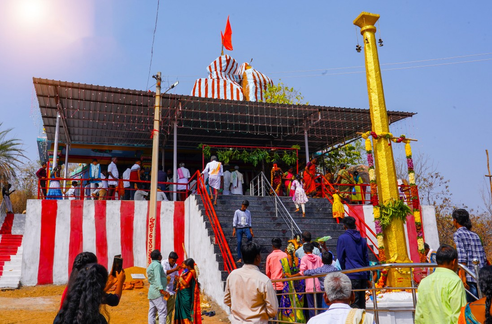

తాజా సమాచారం
Latest Update
శ్రీ ఉగ్ర నరసింహ స్వామి ఆలయ అభివృద్ధి కార్యక్రమంలో భాగంగా
ఈ రోజు ఒక మహత్తర సేవా కార్యక్రమానికి శ్రీకారం చుట్టబడింది.
గత 15 సంవత్సరాలుగా స్వామివారి సేవలో నిరంతరం పాల్గొంటూ,
ప్రతి సంక్రాంతి పర్వదినం సందర్భంగా వేలాది మంది భక్తులకు
అన్నదానం నిర్వహిస్తూ వస్తున్న ముదిరాజ్ యువజన సంఘము
ఇప్పుడు మరో పుణ్యకార్యానికి ముందుకు వచ్చింది.
✨ కొత్త సేవా సంకల్పం ✨
-
స్వామివారి ఆలయ ప్రాంగణంలో క్షేత్రపాలకుడైన
శ్రీ ఆంజనేయ స్వామివారి విగ్రహాన్ని
🛕 51 అడుగుల ఎత్తుతో ప్రతిష్ఠించాలనే నిర్ణయం
తీసుకున్నారు.
-
💰 ఈ పవిత్ర కార్యక్రమానికి సుమారు
₹30 లక్షల వ్యయం అవుతుంది.
-
స్వామివారి మీద భక్తి ఉన్న వారు,
ఈ మహత్తర విగ్రహ ఏర్పాటు కార్యక్రమంలో
తమ వంతు సహాయం చేయాలని మనస్ఫూర్తిగా కోరుకుంటున్నాము.
📞 సహకరించదలచిన భక్తులు సంప్రదించవలసిన నంబర్లు:
👉
95731 61468
👉
99630 06722
👉
94417 95708
As part of the development activities of
Sri Ugra Narasimha Swamy Devasthanam,
a noble and divine service initiative has been formally launched today.
For the past 15 years, the Mudiraj Youth Association has been
actively serving the Lord and organizing Annadanam for thousands
of devotees every Sankranti festival.
Now, they have come forward to undertake another sacred initiative.
✨ New Sacred Initiative ✨
-
A decision has been taken to install a
51-feet tall statue of Sri Anjaneya Swamy,
the Kshetrapalaka (protector deity), within the temple premises.
-
💰 The estimated cost for this holy project is
₹30 Lakhs.
-
Devotees who have faith and devotion towards the Lord
are humbly requested to support this divine statue installation.
📞 Devotees willing to contribute may contact:
👉
95731 61468
👉
99630 06722
👉
94417 95708

 




